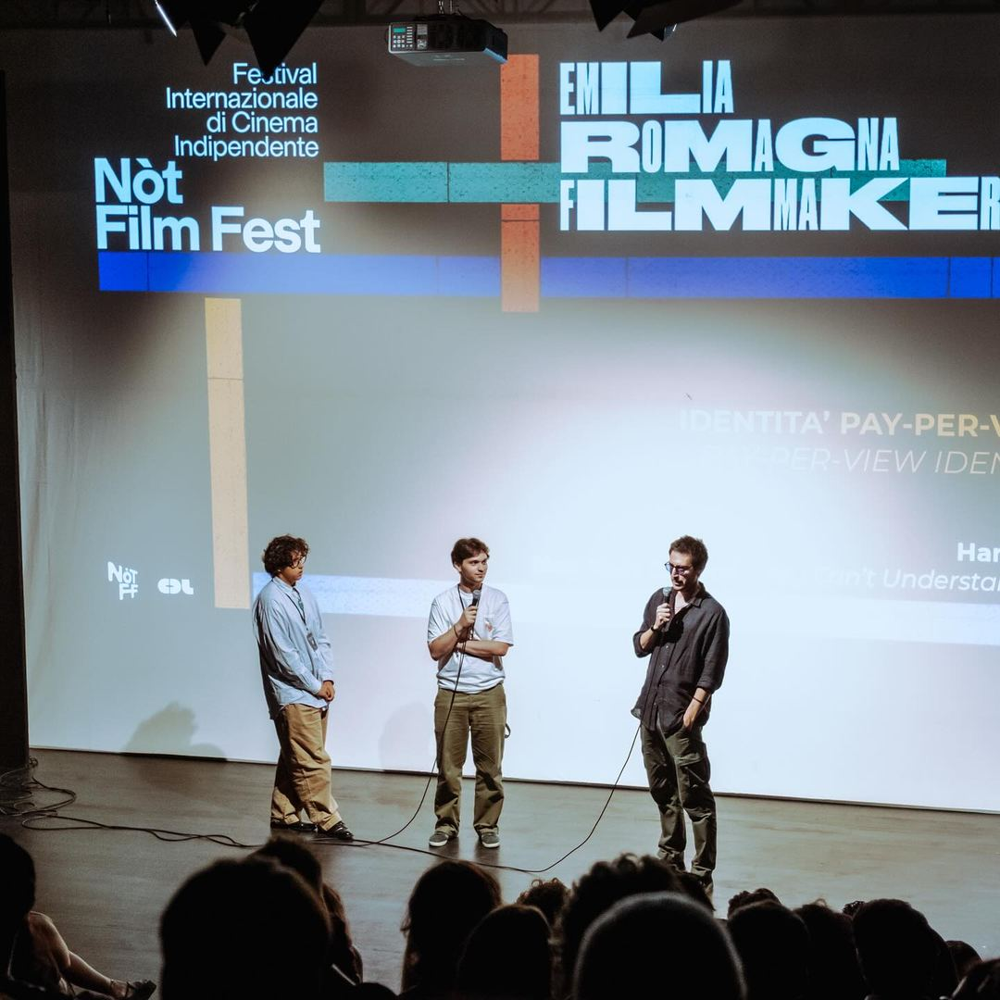
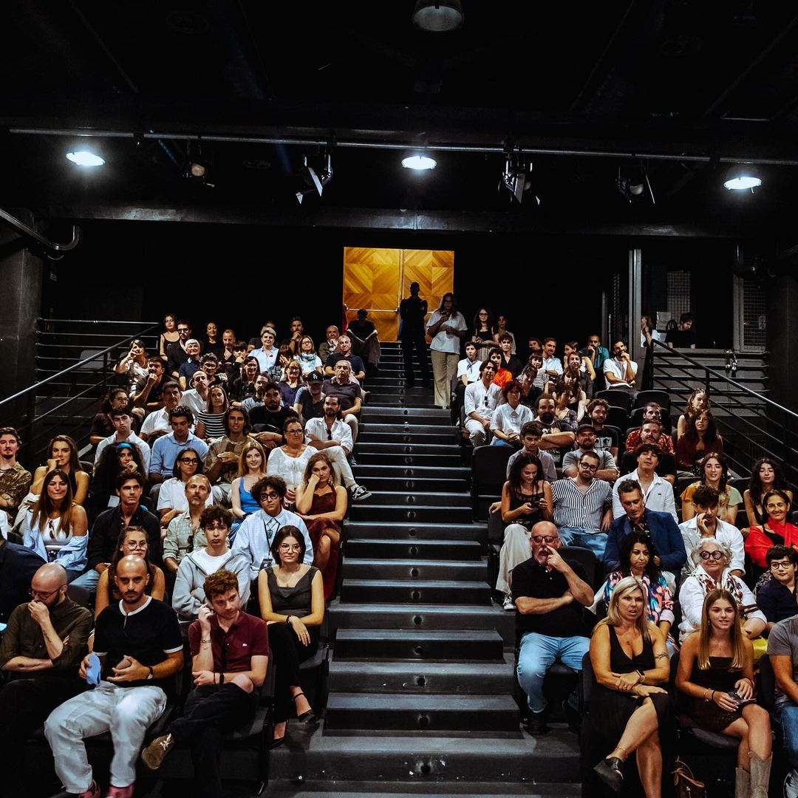
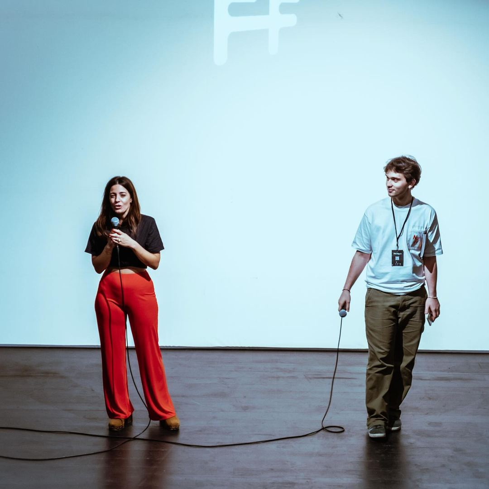
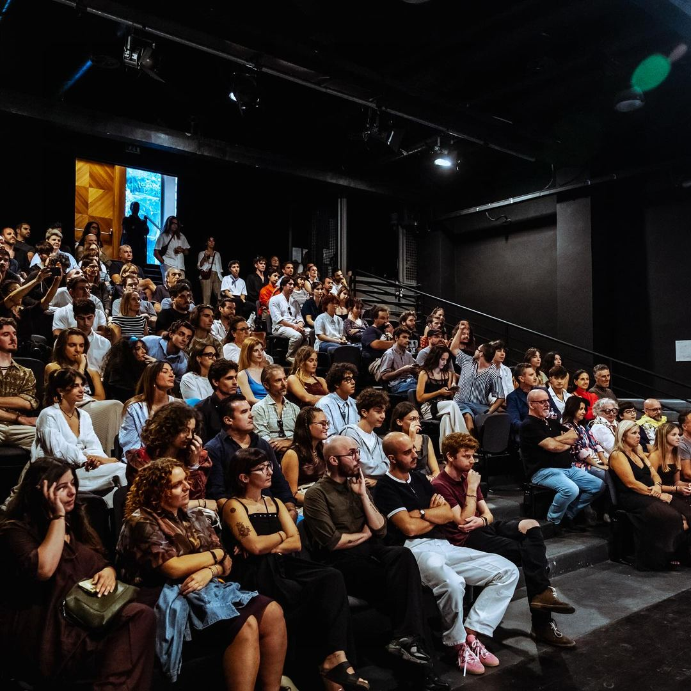
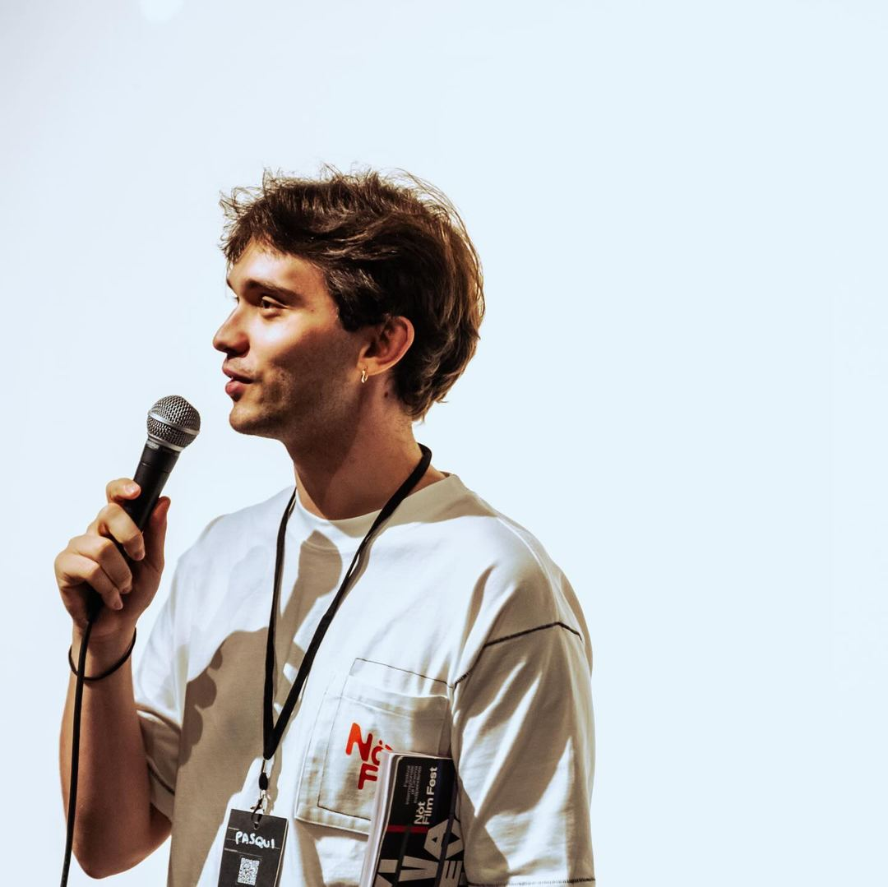

Short Talks al Nòt 2025
Domenica 31 agosto 2025, per l'ottava edizione del Nòt Film Fest, Short Talks cura al Teatro Il Lavatoio di Santarcangelo la presentazione della sezione Emilia Romagna Filmmakers. Sette cortometraggi in concorso, firmati da autori della regione e organizzati in blocchi tematici.
Programma
Identità pay-per-view
-
Hardcore Francesco Barozzi · 19'
-
Non Puoi Capirmi Christian Dei · 18'
Destini sospesi
-
Rapacità Martina Mele · 12'
-
Little Bird Sara Schiavone · 14'
Dove resta il silenzio
- Andrea Gabriele Rattini · 9' Nella Cortoteca
-
La Blatta e la Formica Marco La Ferrara · 15'
-
Previsioni Tommaso Dondi · 6'




